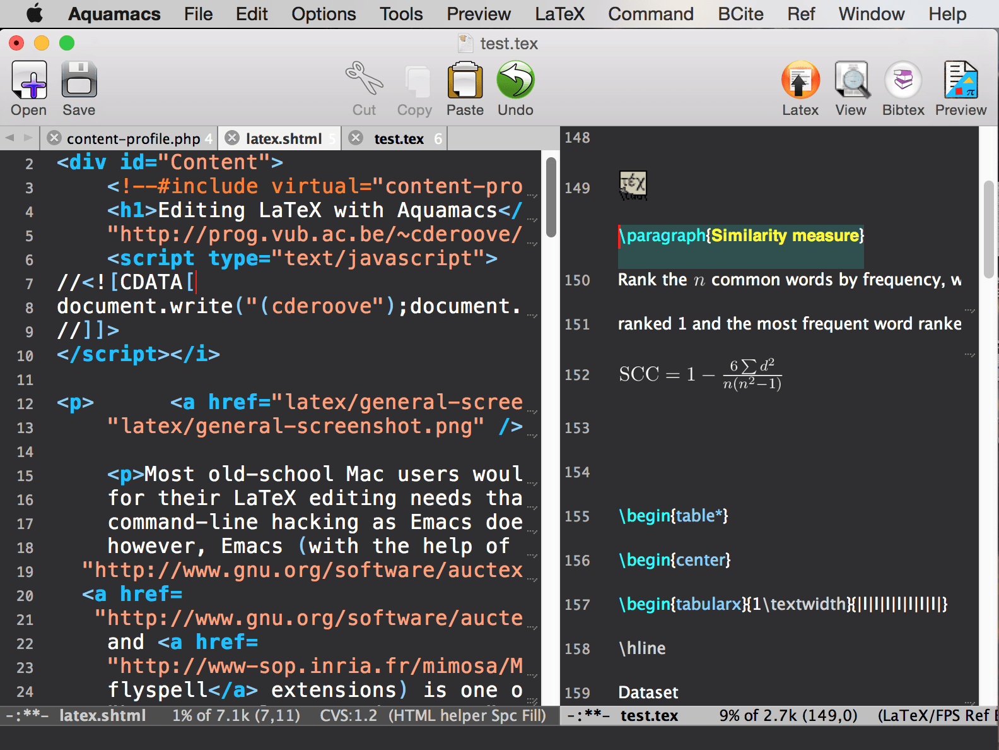

The Emacs for the Mac
An Editor for Text, HTML, LaTeX, C++, Java, Python, R, Perl, Ruby, PHP, and more...
Aquamacs is a modern editor based on GNU Emacs. Read More

Project News
Aquamacs 3.5 released -- Mandatory update for macOS Mojave (macOS 10.14)
2019-08-18
Aquamacs 3.5 has
been
released.
Aquamacs 3.4 released
2018-07-27
Aquamacs 3.4 is based on Emacs 25.3 and the latest versions of many packages. It is compatible with macOS 10.12 Sierra and comes with some critical improvements.
Download
here.
Aquamacs 3.3 released
2016-09-20
Aquamacs 3.3 is based on Emacs 25.1. It is compatible with macOS 10.12 Sierra
and comes with many improvements.
 Download Version 3.5 for Mac OS X (except El Capitan)
Download Version 3.5 for Mac OS X (except El Capitan)